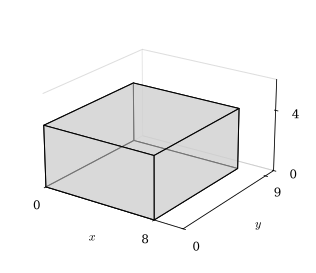
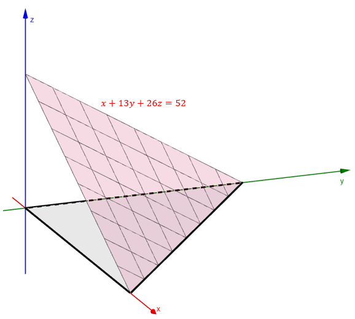

Triple Integrals and Volume
When the function being integrated is \(1\), the triple integral gives the volume of the solid \(E\). Through examples, we will see why.
Volume of a Solid
This builds on our past few lessons, where we:
- found the limit of a Riemann sum for a function of two variables, and used it to find the exact volume of a solid in space,
- used the Fundamental Theorem of Calculus to evaluate double and triple integrals over rectangular and non-rectangular regions,
- used double integrals to find areas, and
- used double integrals to find volumes.
An Example
Let \(E\) be the solid described by \(0 \le x \le 8\), \(0 \le y \le 9\), and \(0 \le z \le 4\). Use a triple integral to find the volume of \(E\). Then draw a graph and explain the meaning of the calculation. Use your knowledge of geometry to confirm the result.

The solid is a rectangular box with length \(8\), width \(9\), and height \(4\). Its volume is \(8 \cdot 9 \cdot 4 = 288\) cubic units, which matches the triple integral.
An Example
Let \(E\) be the solid in the first octant bounded below by the \(xy\)-plane and bounded above by the plane below. Use a triple integral to find the volume of \(E\).

The plane meets the axes at \(x = 52\), \(y = 4\), and \(z = 2\). Solving for \(z\) gives the top of the solid, \(z = \frac{52 - x - 13y}{26}\). In the \(xy\)-plane, the solid sits above the triangle where \(x + 13y \le 52\).
The volume is \(\frac{208}{3} \approx 69.33\) cubic units. This matches the formula for the volume of a tetrahedron with legs along the axes: \(\frac{1}{6} \cdot 52 \cdot 4 \cdot 2 = \frac{208}{3}\).